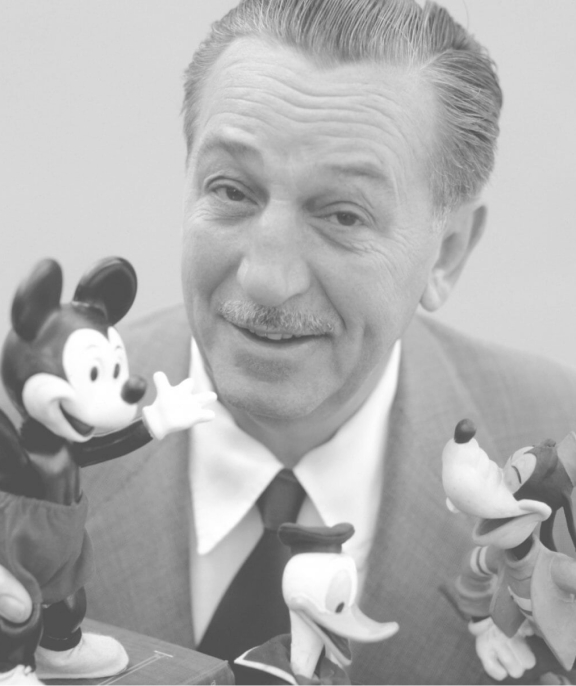
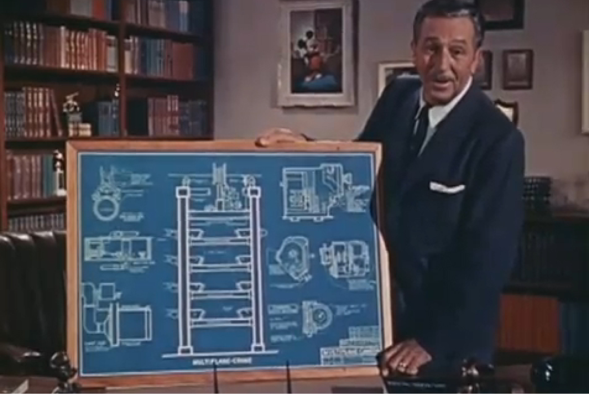
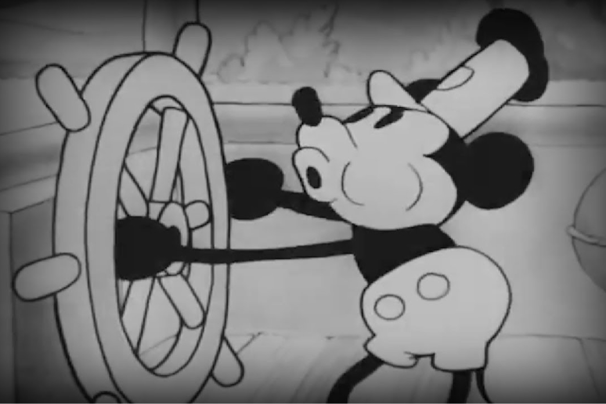

L'evoluzione e la storia dell'animazione
Le origini
L'animazione ha una storia ricca e affascinante, che risale a più di un secolo fa fino agli albori del cinema. Dalle prime animazioni disegnate a mano alle ultime immagini generate al computer (CGI), gli stili di animazione si sono evoluti notevolmente, da semplici immagini tremolanti a una significativa forza culturale nell'intrattenimento e oltre.
Nel corso degli anni, l'animazione ci ha regalato alcuni dei personaggi più iconici della cultura popolare, da Topolino a Homer Simpson, e ha aperto la strada a tecniche rivoluzionarie nel cinema e in televisione.
Prime tecniche di animazione
L'avvento della fotografia e del cinema tra la fine del XIX e l'inizio del XX secolo ha rivoluzionato il campo dell'animazione fornendo nuovi strumenti e tecniche per creare e catturare il movimento. Due delle tecniche di animazione più significative emerse durante questo periodo sono state l'animazione stop-motion e l'animazione cel.
L'animazione in stop-motion prevede la creazione di una serie di immagini fisse, con piccole modifiche apportate tra ciascuna di esse, e quindi la riproduzione in sequenza per creare l'illusione del movimento. La tecnica è stata resa possibile dall'invenzione della fotocamera, che ha permesso agli animatori di catturare e riprodurre immagini più velocemente.
Solo sei anni dopo, James Stuart Blackton pubblicò il suo film del 1906 "Humorous Phases of Funny Faces", considerato da molti come il primo film d'animazione. Questo film dura circa 3 minuti e presenta la mano dell'artista solo all'inizio mentre disegna il personaggio. Successivamente, Blackton ha utilizzato l'animazione in stop-motion per fornire l'illusione che l'immagine si muova in modo indipendente.
L'animazione Cel, nota anche come animazione tradizionale, consiste nel disegnare a mano ogni fotogramma di una sequenza animata e fotografarli in sequenza per creare l'illusione del movimento. Questa tecnica è stata resa possibile dall'invenzione dei fogli di celluloide, che potevano essere rapidamente disegnati e fotografati.
L'età d'oro dell'animazione
Il periodo tra gli anni '1930 e '1960 è stato chiamato età d’oro in quanto ha visto l'ascesa del suono, del colore e delle telecamere multipiano utilizzate insieme ad esso. Nel 1928 con una breve animazione di Walt Disney chiamata Steamboat Willie, per la prima volta il suono veniva sincronizzato con l'animazione.
Nel 1937, la Disney pubblicò Biancaneve e i sette nani, segnando un momento leggendario dell'animazione. Il primo lungometraggio animato disegnato a mano che ha aperto la strada al futuro dell'animazione. È stato realizzato con uno standard così elevato che ancora oggi Biancaneve e i sette nani è cementato nella cultura pop e rimane uno dei film Disney più famosi e popolari.
La Disney è stata anche responsabile della creazione della telecamera multipiano nel 1937, che ha cambiato completamente ancora una volta il gioco per l'animazione, in quanto ha offerto un nuovo senso di profondità e realismo all'animazione.
Tecniche e tendenze moderne dell'animazione
Prima del 1960, le animazioni erano disegnate esclusivamente a mano. Tuttavia, i primi computer offrivano ai creatori di animazioni un modo completamente diverso di creare, rivoluzionando ancora una volta il settore.
Hummingbird è stata la prima animazione generata al computer, realizzata nel 1967. Gli animatori hanno utilizzato 30,000 immagini per creare il pezzo e, sebbene ora sembri essenziale, ha cambiato il modo in cui è stata eseguita l'animazione.
Conclusione
L'animazione è cambiata immensamente nel corso dell'ultimo secolo, da inizi relativamente umili a una forma d'arte complessa e altamente dettagliata. Gli sviluppi tecnologici nel tempo hanno semplificato alcuni aspetti, consentendo ai creatori di animazione di espandere le possibilità a nuovi livelli.
Walt Disney ha aperto la strada all'animazione e ha svolto un ruolo importante in quella che molte persone chiamano ora l'età d'oro dell'animazione.
Le capacità dell'animazione al computer continuarono ad avanzare ed espandersi, dando origine agli straordinari capolavori CGI che attualmente dominano il nostro panorama multimediale. Vedere dove ci porterà l'animazione è entusiasmante, con i progressi tecnologici che arrivano più velocemente ogni anno.